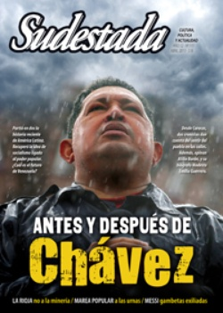

Buscar
La ciudad hechicera
En el viaje hacia las profundidades de la identidad de la América Negra, los cronistas se internan ahora en la mítica Cartagena de Indias. Recuerdos de conquistadores y heridas de conquistados conviven en un puerto que abre una página singular en la historia de nuestro continente.
Edición N° 117
Abril 2013
Revista bimensual
Comprar edición impresaSumario
- Antes y después de Chávez
- La patria de la esquizofrenia
- Dinosaurios
- Viaje al interior de la Rioja antiminera
- Gambetas exiliadas
- "El estilo, lo que hago, es porque escuché a Gardel"
- "No hay transformación social sin poder popular"
- La ciudad hechicera
- Desmonumentar a Roca
- El pájaro que vino de la noche
Compartir Articulo
Fue el puerto más importante de ingreso de esclavos a América. Arribaban más de mil negros al mes, pero no todos soportaban las condiciones de viaje y de llegada a la plaza fuerte de Cartagena donde los mercaderes ecuatorianos y peruanos pagaban dos escudos por cada uno de ellos, y los vendían en la profundidad del continente a doscientos. Ante la realidad de la Trata, sostén del enriquecimiento de la Corona, España dispuso un estricto control del comercio para cobrar los impuestos e impedir una "invasión negra".
Los españoles vivían con mucha preocupación el eventual riesgo de que se produjera en las colonias una influencia negrera que no pudieran controlar. Por ello dispusieron medidas de seguridad que regulaban la calidad y cantidad de esclavos. No obstante, en la América de hoy no es difícil comprobar que la negritud prevalece en la diversidad cultural de los latinoamericanos, así como en lo espiritual es determinante el legado de los pueblos originarios.
Pese al temor español, por Cartagena ingresaron no sólo los esclavos destinados al gran virreinato peruano, sino también los que iban a las islas del Caribe y las Antillas. De allí que se convirtiera en un centro comercial de relevancia en los tiempos de la conquista.
El escritor e historiador Jorge Palacios Preciado relata la Cartagena de aquella épocas: "Cartagena, en razón de la conquista y defensa militar de los territorios ocupados se convirtió, casi desde su fundación, en punta de lanza de colonización en la etapa continental y fue además puerto de gran movimiento, centro administrativo de primera importancia, lugar de intenso intercambio y de servicios de una extensa región. Sin embargo, la actividad más lucrativa y el comercio más apetecido fue el que se adelantó con la fuerza de trabajo esclavo, convirtiéndose éste en la mayor fuente de riqueza. Aun sin haberse establecido la magnitud del movimiento negrero durante el siglo XVI y mitad del XVII, es de presumir que fue a partir y alrededor de las transacciones con la mercancía fuerza de trabajo esclava como se formaron los grandes capitales de intermediarios y comerciantes y por su parte, el tesoro, como sostenían los propios funcionarios reales, ‘recibía mayor beneficio con un navío de negros que con galeones y flotas'. A pesar de las continuas quejas de las autoridades del puerto sobre el decaimiento del comercio esclavista, Cartagena fue, desde 1595 hasta 1615, el único puerto de la América española autorizado para recibir las cargazones de los asentistas y tratantes de esclavos; con posterioridad se agregó Veracruz y excepcionalmente se dieron permisos para otros sitios. Sin embargo, en casi todos los contratos se estipuló que Cartagena sería el puerto de primera entrada".
La ciudad hechicera
Las paredes de las casonas en Cartagena de Indias aún se mantienen húmedas de sangre negra. Y de vez en cuando, brota. Sobre todo, cuando un heredero de la conquista se atreve a denostar la historia, y salpica de una forma que resucita a Busiraco -la imagen que adoraban esclavos e indios- en el cerro de la Popa.
René Cano cuenta con los ojos abiertos, mientras caminamos por las calles del arrabal de Getsemani, que en una oportunidad estaba estacionado dentro de su taxi en el puerto y bajó de un crucero trasatlántico un gringo desaforado. "Se llamaba Pierre Durigñaux. Subió al carro, y me dijo que lo llevara al barrio Olaye Heredia. Me di vuelta y le recomendé que evitáramos ese viaje porque esa zona no era recomendable, y menos para un extranjero. El gringo insistió; y en el camino, le pregunté por qué quería conocer un asentamiento peligroso a orillas de las ciénagas. Me respondió que era porque allí ‘hay nenas y drogas a placer'. Le dije que sí, pero que tal vez no saliera para contarlo.
(La nota completa en la edición abril 2013 - Sudestada nº 117)
Comentarios
Pedro Solans
Articulos más vistos


LIBRERÍA SUDESTADA

Colección infantil

Distribuidora de Libros

Suscripción

Sudestada en URUGUAY

Otros articulos de esta edición
 Nota de tapa
Nota de tapa
Antes y después de Chávez
Partió en dos la historia reciente de América Latina. Recuperó la idea de socialismo ligado al poder popular. Edificó una ...
 Adelanto
Adelanto
Desmonumentar a Roca
Su figura de bronce todavía impone respeto en decenas de plazas municipales; desde su pedestal de impunidad y negociados parece ...
 ¿Y la izquierda qué? Itaí Hagman, Marea Popular
¿Y la izquierda qué? Itaí Hagman, Marea Popular
"No hay transformación social sin poder popular"
Cuando Marea Popular anunció que participaría en las primarias de las elecciones legislativas en Buenos Aires, algo cambió en el ...
 Malditos: Juan Cunha
Malditos: Juan Cunha
El pájaro que vino de la noche
Un hombre nace en el campo uruguayo en 1910. Lo llaman Juan. Nace, crece y vive entre lo más bello ...
 Dossier
Dossier
Viaje al interior de la Rioja antiminera
Detrás de los grandes negociados, de las complicidades oficiales, del silencio mediático, emerge una historia de resistencia. La de miles ...
 Editorial 2
Editorial 2
Dinosaurios
Después de tres meses de esfuerzo y a punto de inaugurar su muestra "199 108" en el Museo del partido ...